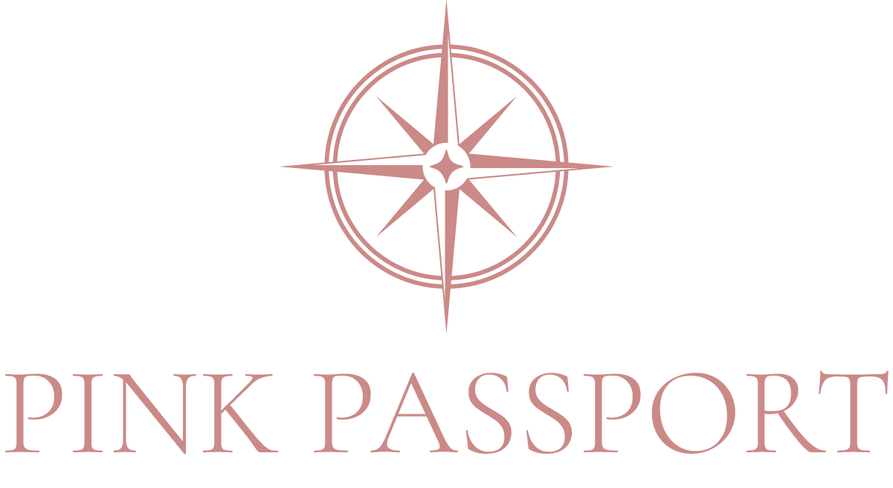
Um logo com linguagem de moda, símbolo de jornada e presença suficiente para nascer em acessórios personalizados e evoluir para roupas, etiquetas, embalagens e coleções autorais.
No mobile, a aplicação do logo alterna automaticamente entre a versão clara e a versão negativa.
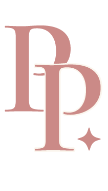
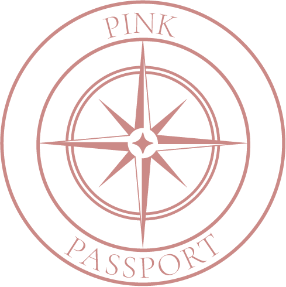
A Pink Passport mantém um luxo claro e feminino, mas com mais frescor visual: rosa mais presente, ritmo editorial, fotos de moda, aplicações reais e um universo de marca pronto para acessórios, gifting, viagem e roupa.
A marca nasce no território de viagem e beleza, mas já comunica um ecossistema de lifestyle: roupas leves, acessórios de viagem, personalização, presentes e coleções autorais.
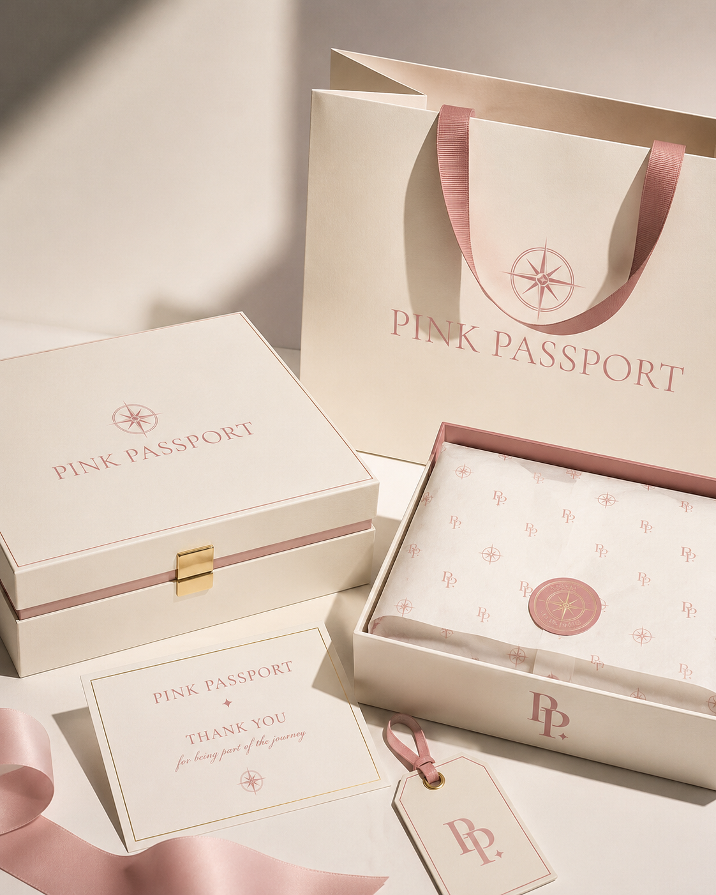
Uma moda feminina jovem, suave e elegante: cetim, alfaiataria leve, tons rosados, champagne e detalhes de marca em tags e embalagens.
O sistema visual foi pensado para funcionar do site ao produto físico: logo principal para presença institucional, monograma para aplicação têxtil, selo para gifting e assinatura vertical para peças editoriais.
Direção, destino e descoberta. Visualmente, ela cria um símbolo com leitura de joia gráfica, ideal para pingente, tag, embalagem e aviamento.
A Cormorant Garamond Light traz sofisticação editorial, mas mantém feminilidade e leveza.
O monograma, o selo e o wordmark vertical tornam a marca flexível para moda, produto, embalagem e redes sociais.
O caminho mais forte para bordado, bolso, etiqueta interna, zíper e detalhes de produto.
Perfeito para embalagem, lacre, tag, adesivo e experiência de presente.
Assinatura de impacto para capas, posts, papelaria e composições editoriais.
A base continua sofisticada, mas o dusty rose ganha mais protagonismo para deixar o universo mais jovem, feminino e memorável.
Assinatura principal. Traz juventude, feminilidade e presença de marca.
Base elegante para embalagem, fundo e universo de presente.
Detalhe metálico para zíper, hot stamping, pingente e aviamento.
Respiro editorial para site, papelaria e apresentações.
Contraste premium para sacolas, caixas e versões negativas.
Fonte usada no logo e nos títulos de impacto. Carrega a estética de moda, beleza e sofisticação feminina.
Fonte de apoio oficial para e-commerce, textos comerciais, menus, legendas e informações de produto. Mais jovem, limpa e funcional.
As imagens simulam a presença da marca em sacolas, caixas, tags, necessaires, selos e produtos de viagem — reforçando a percepção de presente e coleção.
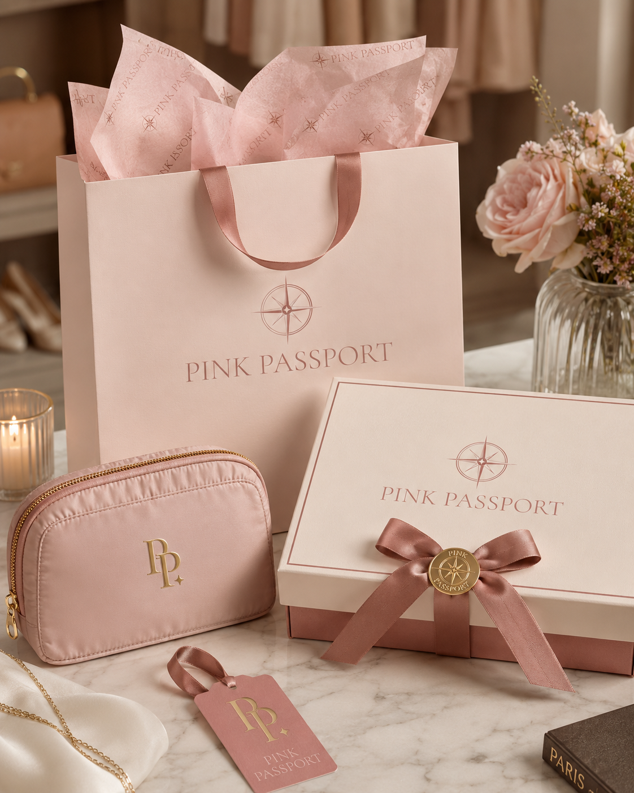
Assinatura institucional em sacola, caixa e cenário de marca.
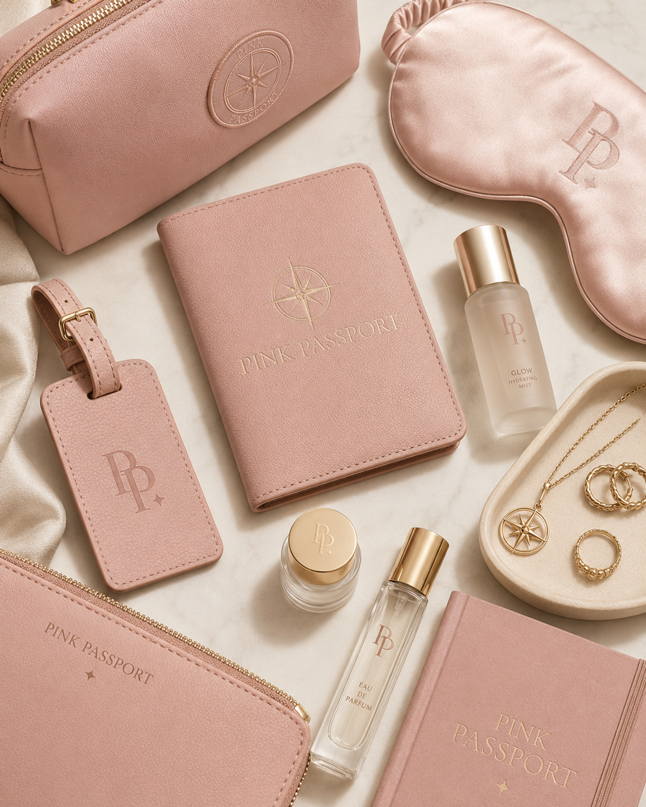
Marca aplicada em acessórios e cenas ligadas à viagem sofisticada.
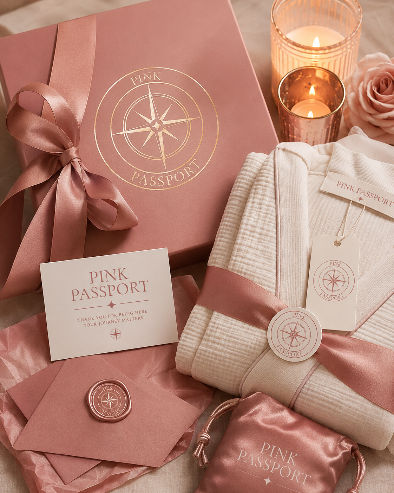
Conjunto de produtos com presença elegante da marca.
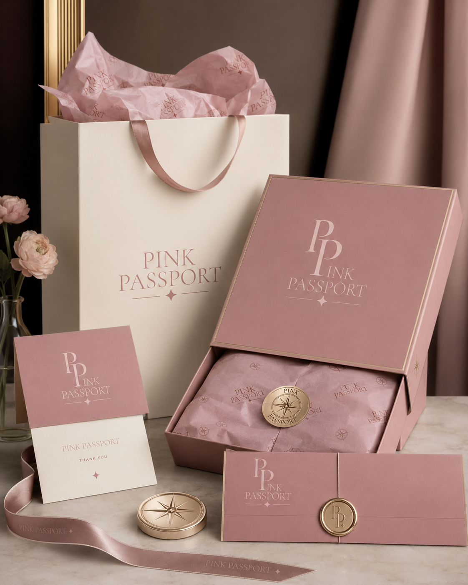
Estética premium para embalagem, gifting e exibição.
A expansão para moda preserva o refinamento, mas traz mais juventude por meio de styling, cetim, tons rosados, peças leves e presença sutil da marca em etiquetas, bolsos, tags e embalagens.
Cetim, alfaiataria leve e tons claros para um guarda-roupa feminino contemporâneo.
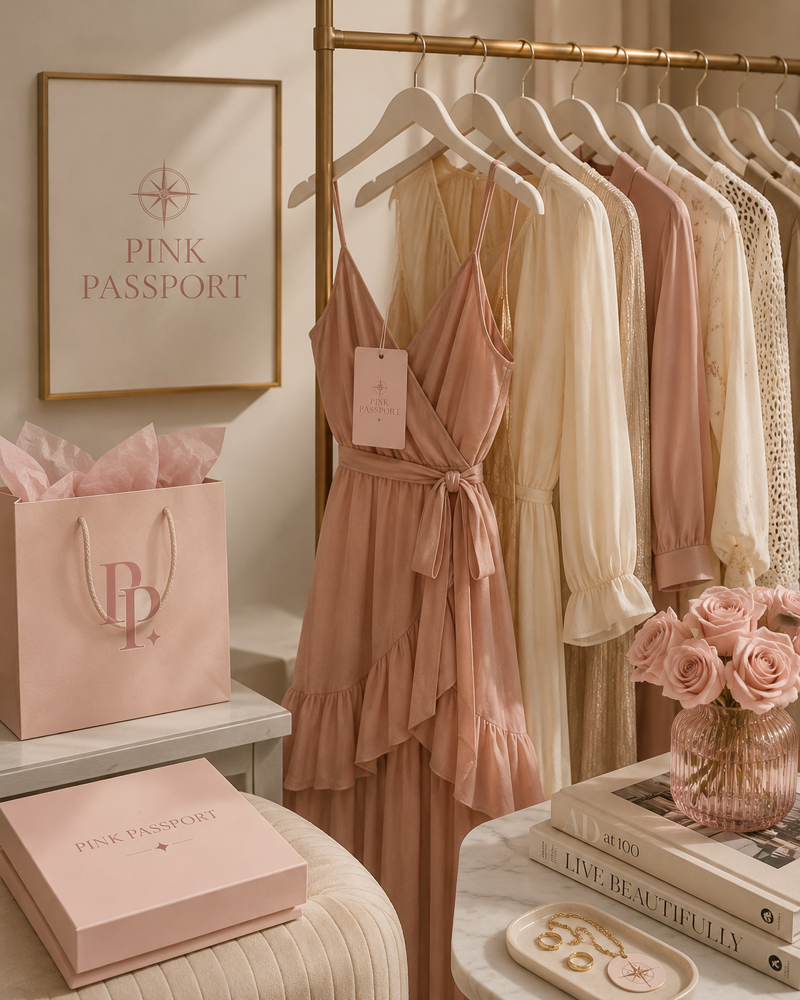
Peças e styling com feminilidade delicada e linguagem de coleção.
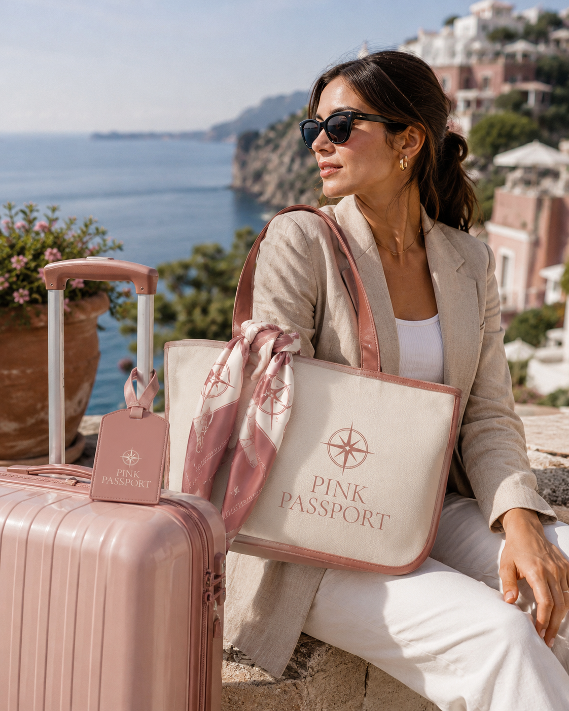
A marca pode viver em malas, tags, vestidos leves, roupas de viagem e peças de verão.
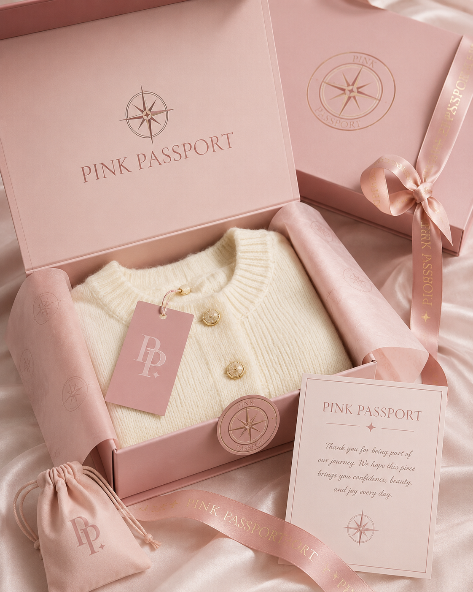
Embalagem, papel de seda, etiqueta e caixa reforçam o desejo da compra.
Monograma no bolso, punho, nécessaire, robe, camisa e etiqueta interna.
Selo circular em caixa, tag, adesivo, papel de seda e coleção especial.
Logo principal em sacola, caixa, cartão de agradecimento e site.
Assinatura vertical em posts, catálogo, capa de coleção e lookbook.